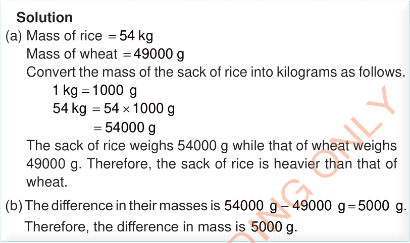

Solution
(a) Mass of rice = 54 kg
Mass of wheat = 49000 g
Convert the mass of the sack of rice into kilograms as follows.
The sack of rice weighs 54000 g while that of wheat weighs 49000 g.
Therefore, the sack of rice is heavier than that of wheat.
(b) The difference in their masses is 54000 g - 49000 g = 5000 g.
Therefore, the difference in mass is 5000 g.